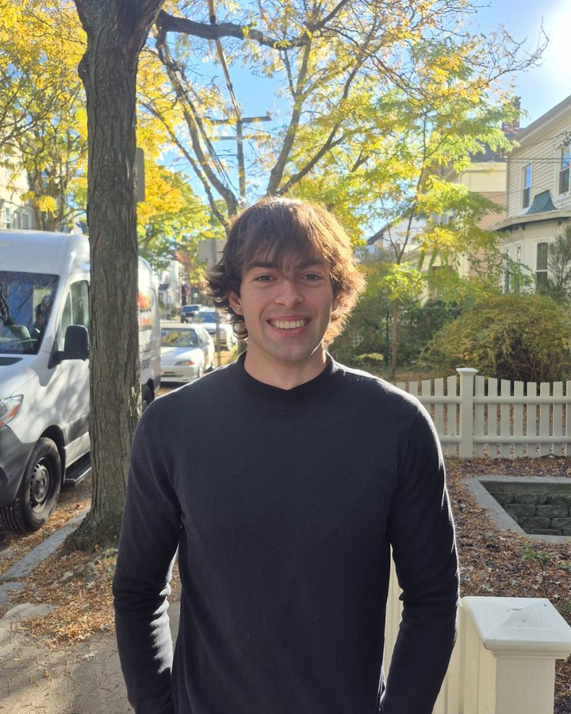
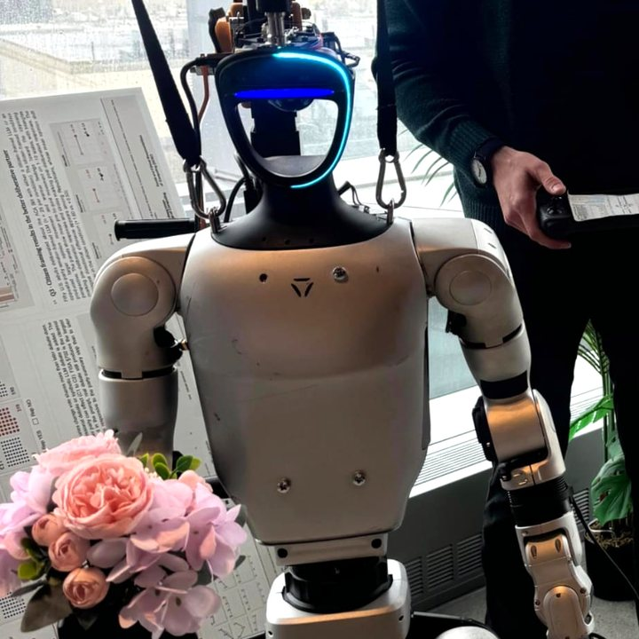
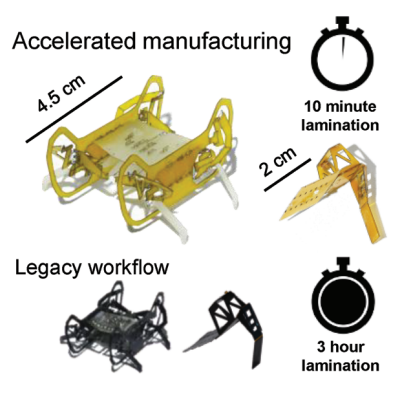

Francisco Ramirez Serrano
PhD student at MIT, Electrical Engineering and Computer Science
Welcome! This is where I share my work and the things I'm curious about.
- Robotics
- Teaching
- Philosophy
- Wingfoiling & surfing
- Calisthenics
- Board games
Selected work
-
 ▶ with sound2025 – now
▶ with sound2025 – nowHumanoid robots at MIT CSAIL
I brought up a Unitree G1 humanoid and deployed NVIDIA's GR00T AI model on it to automate scientific experiments.
-

2025 – 2026 · MIT SERC ScholarWhat should we use humanoid robots for?
As an MIT SERC Scholar (Social and Ethical Responsibilities of Computing), I audited our robot's AI model using the framework from The Ethics of Advanced AI Assistants (Gabriel et al., 2024) and ran a stakeholder role-play workshop. I presented the results as a poster at the MIT SERC Symposium.
-
 ▶ with sound2025
▶ with sound2025An insect-sized jumping robot
At the Harvard Microrobotics Lab I led a walking-jumping microrobot inspired by springtails, from first design to publication.
Science Robotics, 2025 First author -
3D scan of the Headphone (1)2024
Ergonomics testing at Nothing
In London I developed new test methods for the Headphone (1) and turned force measurements into design recommendations.
-

2024Building pop-up microrobots faster
Design rules for pop-up MEMS devices that cut lamination time from 3 hours to 10 minutes.
Advanced Materials Technologies, 2024 First author -
 ▶ with sound2020 – 2021
▶ with sound2020 – 2021Drones that flip themselves upright
At EPFL's Laboratory of Intelligent Systems I worked on insect-inspired self-righting for fixed-wing drones.
Talks, teaching & more
People's Choice award at a hardware hackathon in Shenzhen
My pitch during the Scalable HCI residency in Shenzhen. Tap the video to play it with sound.
- 2026
Teaching assistant, MIT 6.UAR (two semesters, 30+ students each)
- 2023 – 2025
Robotics teaching in Geneva, Hawaii and Lithuania
- 2023
Peer reviewer, IEEE Robotics and Automation Letters
- 2022
ICRA 2022 workshop, Philadelphia